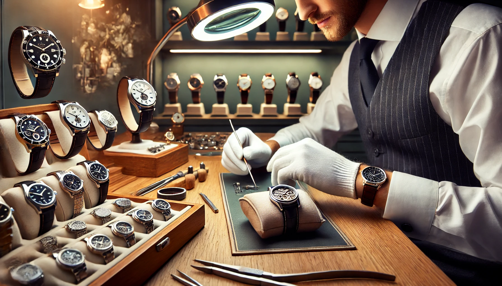

Care & Service
Preserving Excellence Through Time
Maintenance Service
We recommend servicing your Alberto timepiece every 3-5 years to ensure optimal performance and longevity.
- Complete movement service
- Water resistance testing
- Case and bracelet refinishing
- Authentication and quality control


Repair Service
Our master watchmakers are trained to handle any repair, from simple adjustments to complex restorations.
- Movement repair and replacement
- Crystal replacement
- Crown and stem repair
- Dial and hand restoration
Care Instructions
Water Resistance
Check water resistance annually. Avoid operating crown underwater.
Environmental
Avoid extreme temperatures and magnetic fields.
Cleaning
Clean with soft cloth and lukewarm water. Avoid chemicals.
Storage
Store in original box away from humidity and sunlight.